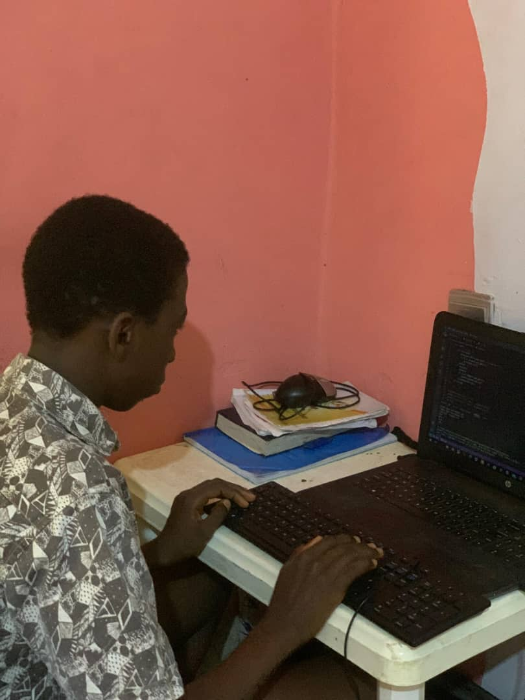
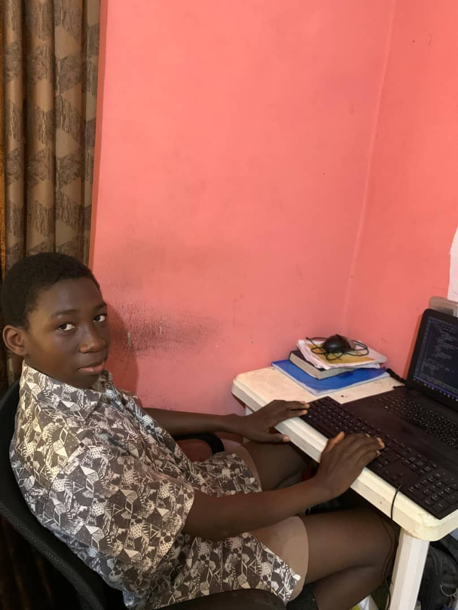

In many classrooms, academic records are written, calculated, and stored manually, page after page in mark books that rarely leave the staff room. For Yusuf Lawal Oluwadarasimi, this wasn’t just something he observed at school. It was part of everyday life. Raised by teachers, he saw the effort behind it, the time, the repetition, the pressure. What he didn’t know yet was that this system could be improved… and that he could be the one to do it.
The Moment Everything Changed
A Tech with Khalid Foundation (TWiK) session introduced Yusuf to digital literacy and coding not as theory, but as tools for solving real problems. For the first time, technology felt practical. Accessible. Useful.
"It made me start thinking differently. Not just about learning, but about fixing things around me."— Yusuf Lawal Oluwadarasimi
Building Without the Right Tools
But there was a challenge. Yusuf didn’t have access to a functional computer. What he had instead was a broken laptop, unreliable, limiting, and far from ideal. But it was enough to try. And he did. Carefully, patiently, he worked around the limitations, testing what he could, adjusting what didn’t work, and continuing anyway. Because for him, stopping wasn’t an option.
"The tools were not perfect, but the idea was clear."
Turning a Problem into a System
For his project, Yusuf chose something he deeply understood: academic record-keeping. He built a Digital Mark Sheet, a system designed to help teachers compute, store, and manage student scores more efficiently. Instead of relying on manual calculations and physical records, his solution introduced a faster, more reliable way to handle academic data. It wasn’t just a school project. It was a response to a real problem.


Yusuf working on his project during a TWiK session. Photo: Tech with Khalid Foundation.
What This Story Represents
Yusuf’s journey is not just about one student building a system. It reflects something larger. Across many communities, students are learning, thinking, and imagining solutions but often with limited tools. Some work with shared devices. Others, like Yusuf, make do with what is available, even when it’s not enough. And yet, they build.
"Background should never define potential."
The Role of Access
At Tech with Khalid Foundation (TWiK), the goal is simple: create opportunities where students can turn ideas into reality. Because the difference is rarely intelligence. It is access. Access to tools. Access to guidance. Access to the chance to try. Yusuf had a glimpse of that access and he built something meaningful with it.
What Comes Next
A student who can rethink classroom systems today can go on to build solutions at a much larger scale tomorrow. But there are many more students like Yusuf with ideas, with curiosity, with the willingness to try. What they need is the opportunity.
Support the Next Builder
There are more students ready to build, solve problems, and create meaningful solutions.